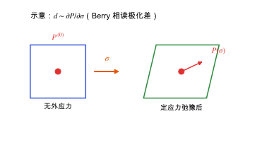

定应力下 Berry 相差分求压电应变系数
说明怎样用外加（或约束）应力下的 Berry 相极化差分直接求压电应变系数 d，从而绕开由弹性张量求逆带来的近相消放大。
直观阅读需要
- 压电张量 里 e 与 d 的区别
- 极化与 Berry 相：极化变化才有意义
完整推导还需要
- 弹性张量 与 d=e\,s
- 弛豫离子弹性常数中的近相消
只是提示，不需要先读完才能往下看。
直觉直观解释
压电应变系数问的是：给晶体一个应力，极化变多少？定义本身就是 d\sim\partial P/\partial\sigma（在约定的电学边界下）[IEEE Std 176]。常见计算路线却是先算 e=\partial P/\partial\eta 和弹性刚度 C，再令 d=e\,C^{-1}。当 C 因近相消而病态时（见 弛豫离子弹性常数中的近相消），误差主要来自求逆，不一定来自极化本身。
另一条路是回到定义：真正施加（或约束到）一组小应力，让晶胞与原子弛豫到新的力学平衡，用 Berry 相读极化，再对应力做有限差分。这条路不显式求 C^{-1}，因而避开“两项大数相减再求逆”的放大通道；代价是每个应力点都要做一次完整的定应力结构优化，并处理极化分支。

| 符号 | 是什么 | 图里对应 |
|---|---|---|
| P^{(0)} | 无外应力参考结构的极化（Berry 相） | 左侧红点 |
| \sigma | 外加或约束的应力 | 中间橙色箭头 |
| P(\sigma) | 定应力弛豫后的极化 | 右侧红点与箭头 |
| 蓝/绿框 | 参考晶胞与变形后晶胞（示意） | 左右几何轮廓 |
图是示意，不代表任何材料的实测轨迹。
定义与关键公式数学与推导
在零电场（或约定的电学边界）下，压电应变系数的笛卡尔形式写为
其中 P_\alpha 是宏观极化的笛卡尔分量；\sigma_{ij} 是应力；偏导在给定电学边界下取值 [IEEE Std 176]。周期晶体中 P 用现代极化理论（Berry 相）定义，只有相对参考结构的变化有确定意义 [@king-smith-1993-polarization; @resta-1994-polarization]。
有限差分形式（中心差分示意）为
其中每个 P(\pm\sigma) 都在该应力约束下弛豫到力学平衡后计算。线性响应要求 \Delta\sigma 足够小，使响应落在线性区；又要足够大，使 \Delta P 不被自洽噪声淹没。
与 d=e\,s^{E} 路线对照：若 e、C（因而 s^{E}）与定应力差分都在同一能量面、同一电学边界下充分收敛，两者应一致。不一致时，优先检查 C 的软本征方向、极化分支，以及应力点是否充分弛豫。
在本研究线里的样子对应与边界
- 何时值得用：当 e 已稳定、但 d=e\,C^{-1} 因软本征方向剧烈放大时，定应力差分可作独立验收，或作为不依赖病态求逆的报告路径。
- Berry 相读数：每个应力点用
LCALCPOL一类开关输出偶极/极化 [VASP Wiki: LCALCPOL]；只比较同一分支上的差值（见 极化与 Berry 相）。 - 与有限电场方法不同：有限电场改的是电学扰动（见开放讨论中的有限电场条目）；这里扰动是力学上的应力。两者都可做有限差分，但响应的自变量不同。
常见坑对应与边界
- 分支跳变：软晶体在应力扫描时晶胞变化大，\Delta P 可能跨过极化量子。必须先与量子比较，再决定是否加减整数支。
- 未弛豫到目标应力：若残余应力仍与标称 \sigma 差一截，差分的分母名不副实。
- 步长超出线性区：步长太大混入高阶弹性与高阶压电；步长太小则 \Delta P 被噪声淹没。需要对关键分量做步长扫描。
- 能量面不一致：几何优化与极化计算若色散、截断或 k 点不同，得到的不是同一曲面的 \partial P/\partial\sigma。
检验自己对应与边界
参考资料
官方文档IEEE Std 176
IEEE Standard on Piezoelectricity, ANSI/IEEE Std 176-1987
尚未实际查阅，目前只是拟查阅书目
论文King-Smith & Vanderbilt 1993
尚未实际查阅，目前只是拟查阅书目
论文Resta 1994
尚未实际查阅，目前只是拟查阅书目
官方文档VASP Wiki: LCALCPOL
VASP Wiki, LCALCPOL（Berry 相方法计算宏观极化）
尚未实际查阅，目前只是拟查阅书目
分类响应与张量性质 · 方法 · 研究线：压电与响应计算 · 状态：草稿